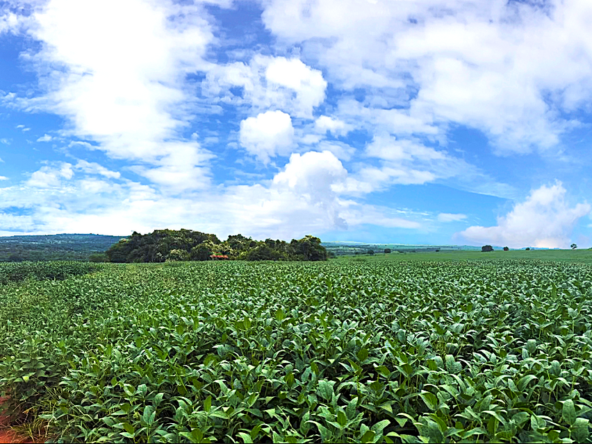

Volume
Target metric tons, spot purchase needs, contract terms, or future crop allocation planning.

Buy Brazilian Soybeans
Soybean Export Supplier
AgroExpress Ltda. supplies Brazilian GMO soybeans for international buyers seeking dependable bulk commodity sourcing, feed and processing supply, contract orders, or future crop allocations.
Our farms and trusted grower network allow us to support soybean purchases by volume, destination, delivery term, packaging preference, and shipping schedule.
Request a Soybean Quote
Buyer Information
Target metric tons, spot purchase needs, contract terms, or future crop allocation planning.
FOB, CIF, destination port, ASWP delivery, and shipment timing requirements.
Bulk or bagged soybean supply depending on buyer specifications and logistics.
Soybean Purchasing FAQ
Send your requested volume, destination port, delivery terms, packaging preference, and timeline to our team. We will review the purchase request and respond with the next quote steps.
Yes. AgroExpress offers bulk and bagged GMO soybeans depending on order requirements and logistics planning.
Yes. AgroExpress supports FOB and CIF delivery options and can plan delivery to Any Safe World Port.